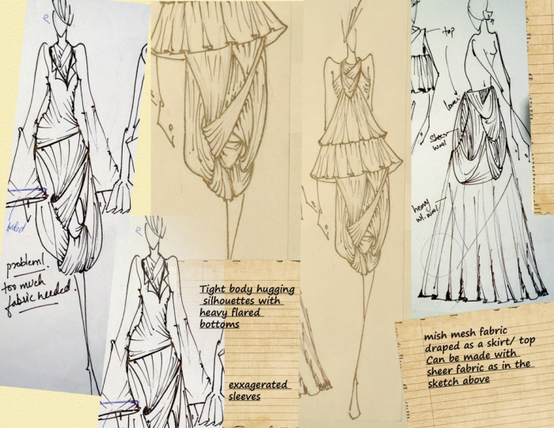
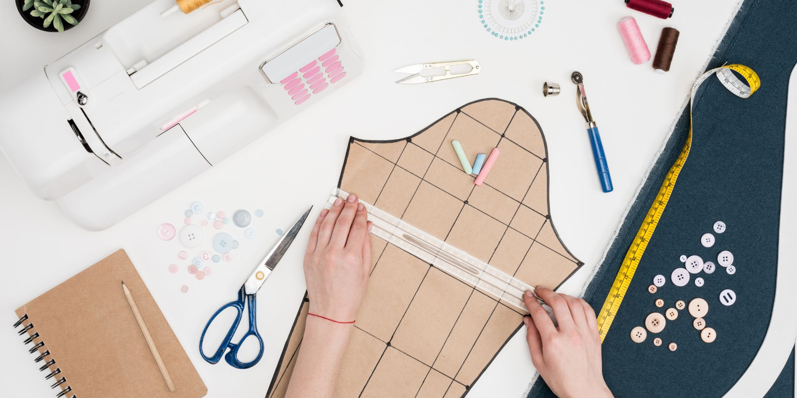
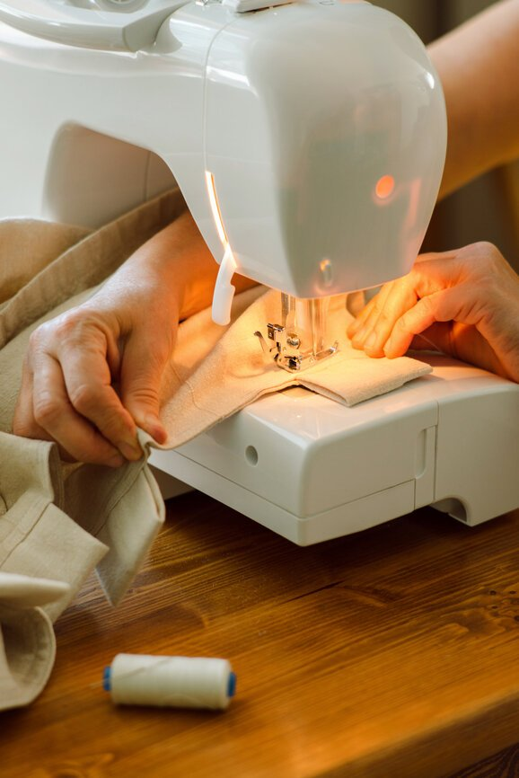

Ideating
This is where your idea starts. No manufacturer can create a garment for you if you don't have a tech pack for them to build it off of. If you have a rough drawing of the garment you want to make, you aren't ready to make a sample yet! This is an idea, not a design. Building a proper tech pack puts your idea on track to become your design. Until you know how you want the garment to feel and drape on the body, how closely you'd like it to it lay against the body, and have an idea of what kind of fabric you'd like it to be made of, we can't build a tech pack.
In the ideation process, pay special attention to the fabrics available to you and what works. It's common for new designers to not know what materials work with what designs - understand that the best way to learn is to visit a fabric store and get your hands on as many kinds of fabric as possible to learn what each feels like. When you know what the garment will be made of, then you can choose measurements of the finished garments, and any design/fit features that will need to be noted on the first pattern. Get specific about the way you want your piece to hug the body, pleats, darts, seamlines, and style - patterns are drafted directly from this idea.
You should place your designs in a notebook. Try this one here!
Drafting and Creating Your Sample
This is where you (or your pattern maker) will take your sketch and notes and transpose the idea onto pattern drafting paper. An experienced drafter can look at a pattern and know how a pattern piece will read on a body. This is the last step before creating a sample piece. It's crucial that at this point you've already communicated any darts, seam lines, or decorative design choices that would alter a pattern.
You (or your stitcher) will then take your pattern and do a test run using a material similar to the final fabric you want to use. This part requires a fit model to ensure you nail the fit you want in the sample size. You'll then go over the garment on the model, noting any changes you want made to the final design which will need to be translated back over the pattern as well.
Grading and Production
Grading is the method used to create a range of sizes for a single style. In order to grade, you must give your grader: what sizes (alpha/numeric) you'd like to grade your pattern to, what grade rules you prefer to use, a cutters must outlining everything in the pattern, how many pieces are included, and what the pieces are (A piece numbering system).
Now that your patterns are finalized, you may now roll into production. Your manufacturer will place markers over fabric, and by referencing your cutters must, cut out everything to satisfy the order. It is then stitched and finished. Interior garment tags are stitched in proving the product's country of origin, fabric content, and care instructions.